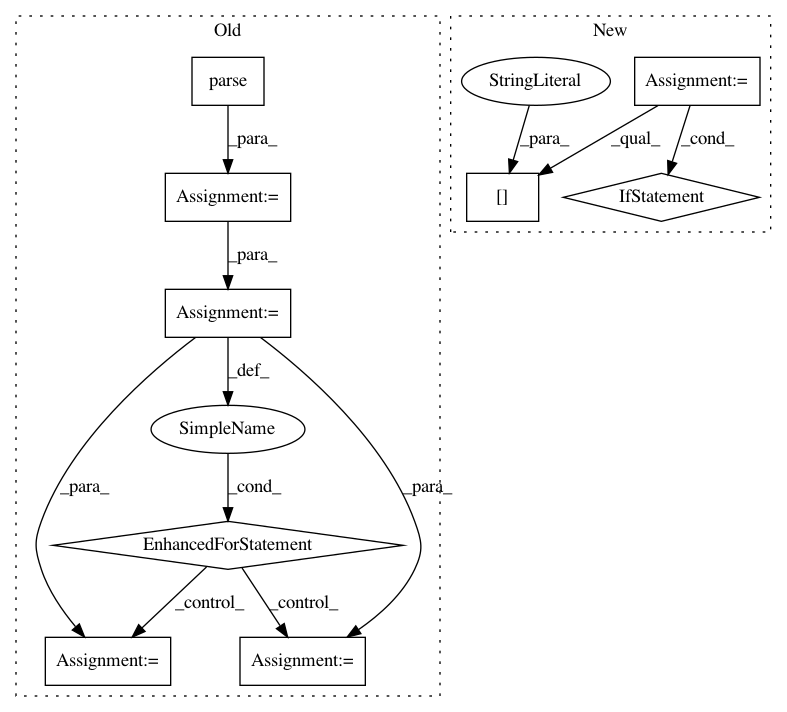

a724c8a5d84f531c029fe3efd3d6d01b28880af1,graphbrain/cognition/agents/txt_parser.py,TxtParser,run,#TxtParser#,24
Before Change
pos = 0
for paragraph in paragraphs(infile):
parse_results = parser.parse(paragraph)
for parse in parse_results["parses"]:
main_edge = parse["resolved_corefs"]
// add main edge
if main_edge:
// attach text to edge
text = parse["text"]
attr = {"text": text}
// print("main edge: {}".format(main_edge.to_str()))
yield create_op(main_edge, sequence=sequence, position=pos,
attributes=attr)
self.edges += 1
pos += 1
// add extra edges
for edge in parse["extra_edges"]:
yield create_op(edge)
for edge in parse_results["inferred_edges"]:
// print("inferred edge: {}".format(edge.to_str()))
yield create_op(edge, count=True)
After Change
parser = self.system.get_parser(self)
sequence = self.system.get_sequence(self)
for op in parse_text(infile, parser, sequence):
if op["sequence"] == sequence:
self.edges += 1
yield op
def report(self):
rep_str = ("edges found: {}".format(self.edges))
return "{}\n\n{}".format(rep_str, super().report())
In pattern: SUPERPATTERN
Frequency: 3
Non-data size: 9
Instances
Project Name: graphbrain/graphbrain
Commit Name: a724c8a5d84f531c029fe3efd3d6d01b28880af1
Time: 2020-11-15
Author: telmo@telmomenezes.net
File Name: graphbrain/cognition/agents/txt_parser.py
Class Name: TxtParser
Method Name: run
Project Name: shibing624/pycorrector
Commit Name: 4e144c9f842d7415d8be5bdbb5912d88ae32cced
Time: 2018-04-16
Author: 507153809@qq.com
File Name: pycorrector/seq2seq/corpus_reader.py
Class Name: CGEDReader
Method Name: read_samples_by_string
Project Name: shibing624/pycorrector
Commit Name: 4e144c9f842d7415d8be5bdbb5912d88ae32cced
Time: 2018-04-16
Author: 507153809@qq.com
File Name: pycorrector/seq2seq/corpus_reader.py
Class Name: CGEDReader
Method Name: read_tokens